Overview
All Plane of Water bosses covered here are Immune to Cold (CR 1000 per PQDI).
The plane bosses are covered in their own sections below; the Fishlord summoning events are covered in the Ring Events section, and Coirnav the Avatar of Water is covered in the Coirnav section.
Ring Events
The Fish Summoning Event
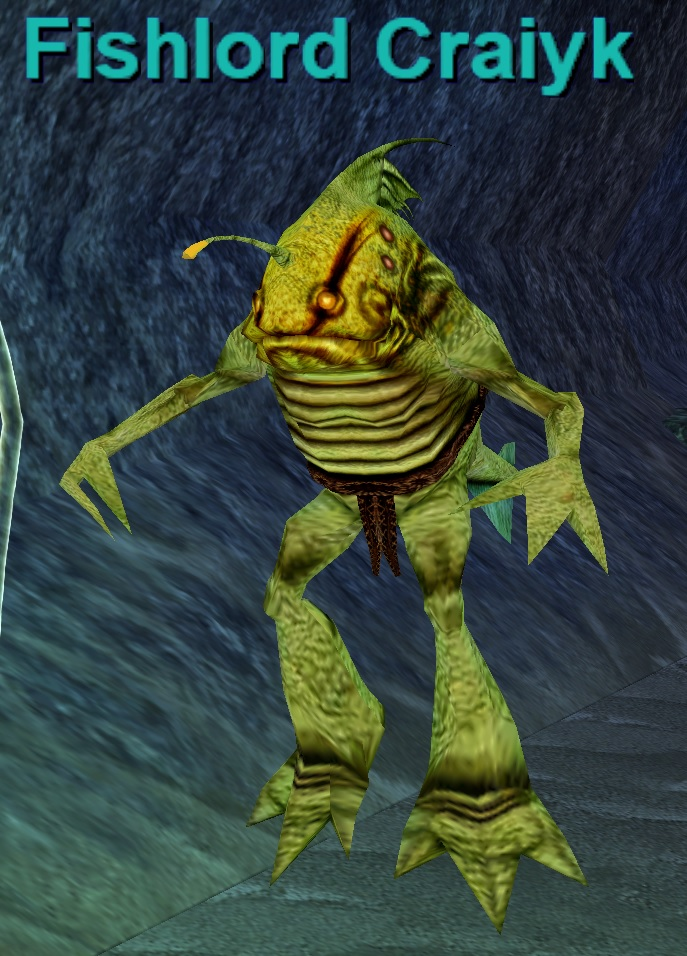
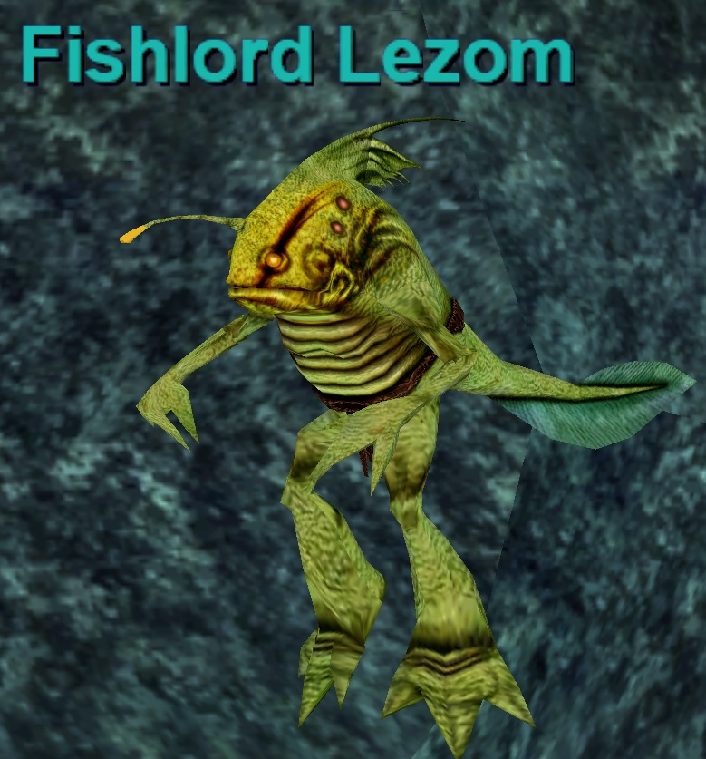
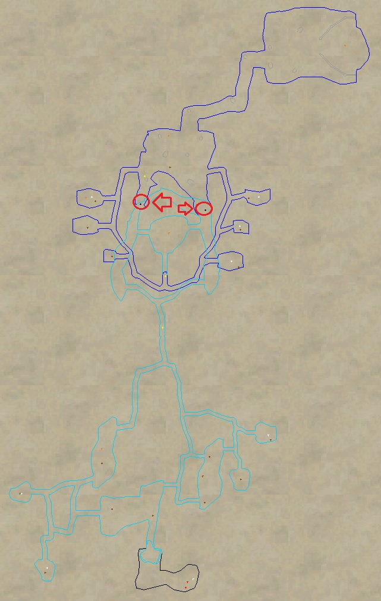
- Give 100pp to either Fishlord to start the event. These events are separate and take place in each Fishlord’s respective tunnel. This means you can do the event twice back to back (Once per Fishlord) if you choose. These can be done with much less than a full raid. 1-2 geared groups can easily do these. Even less than 1 group if you are really geared and have an Enchanter. Your goal is to kill the mobs that spawn while keeping the Fishlord alive. If the Fishlord dies, you’ll fail. Respawn seems less than 12 hours — not sure exact time.
- Waves of trash mobs spawn with named fish eventually spawning throughout the event. Having an Enchanter is highly recommended in smaller or lower dps groups (1-2) as mobs will keep coming. All mobs are slowable and mezzable, with the exception of the named fish, which may not be mezzable.
- Keep killing fish until the final named spawns. The named that spawn are random but scale up in difficultly as you get further into the event. The whole event can take 45 min – 1 hour.
Named can be any of the following:
- a hungry anglerfish
- a stringy anglerfish
- a toughened anglerfish
- a dark anglerfish
- a foul anglerfish
- a wicked anglerfish
- a prime anglerfish
- a prismatic anglerfish
- a superior anglerfish
- a king anglerfish
- a master anglerfish
- a supreme anglerfish
Quarm Script
Sourced from the Quarm server Lua script (powater/encounters/Fishlords.lua, SecretsOTheP/quests): Trading 100 platinum to a Fishlord (Fishlord Craiyk or Fishlord Lezom) starts the event — the Fishlord walks to his summoning point and begins the chant, enabling the trash spawns in his tunnel. The script tracks kills of three trash families (ferocious/fierce/furious anglerfish) and spawns a named anglerfish at the 5th, 10th, 15th, and 25th kill of each family, escalating in power. The event ends at 25 kills (or immediately if the Fishlord dies); the Fishlord then re-enables with a 25-minute respawn timer. Trash despawns 3 minutes out of combat.
Grioihin the Wise
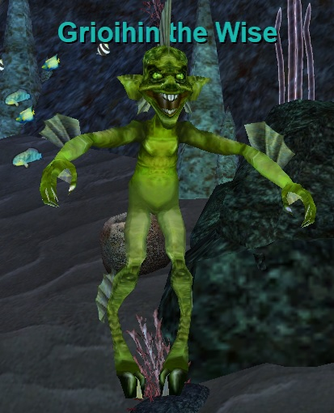
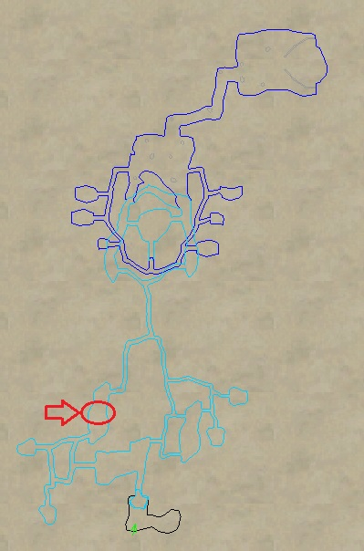
Fight Info
- 550,000 HP (PQDI; eqprogression estimated ~650K)
- Hits 693–1662 (PQDI; eqprogression estimated 2,000+)
- Rampages
- Slowable
- Casts Tidal Freeze (PBAE, 2,000 DD + 5 sec stun, -350 Cold Based, 60 sec recast)
| Level | 75 |
|---|---|
| HP | 550,000 |
| Hits | 693 - 1662 |
| Resistances | MR 165 / CR 1000 / FR 165 / DR 95 / PR 95 |
| Special Abilities | Summon, Enrage, Rampage, Dual Wield, Do Not Equip, Magical Attack, Unmezzable, Uncharmable, Unstunable, Unfearable, Immune to fleeing, Immune to melee except magical, NO LOITERING |
| Can Cast | Tidal Freeze |
Cross-referenced from pqdi.cc (Project Quarm Database Interface)
Hydrotha
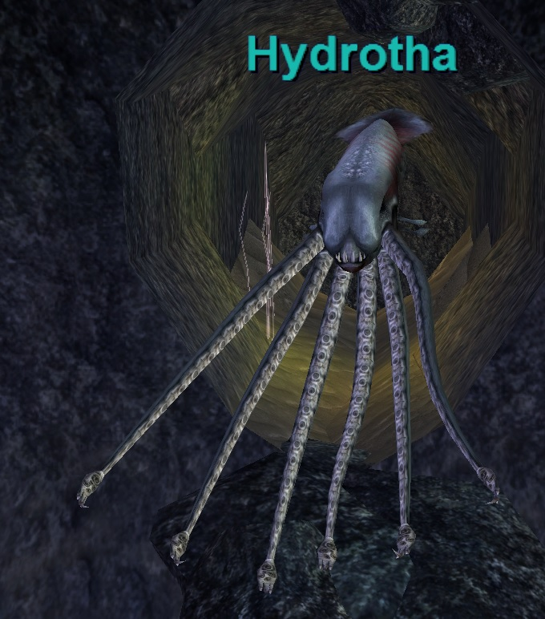
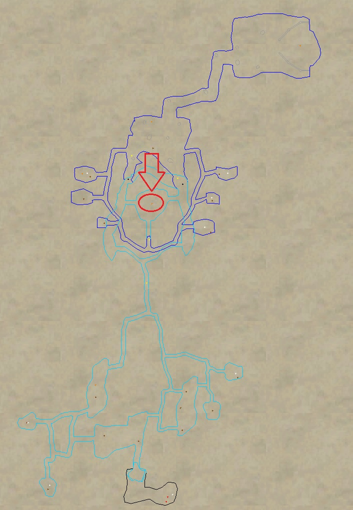
Fight Info
- 650,000 HP (PQDI; eqprogression estimated ~700K)
- Hits 467–2017 (PQDI; eqprogression estimated 2,200+)
- Flurries
- Slowable
- Casts Engulfing Ink (Single Target, Blind -500 HP DoT, -350 Magic Based, 30 sec recast)
| Level | 75 |
|---|---|
| HP | 650,000 |
| Hits | 467 - 2017 |
| Resistances | MR 165 / CR 1000 / FR 165 / DR 95 / PR 95 |
| Special Abilities | Summon, Enrage, Flurry, Dual Wield, Do Not Equip, Magical Attack, Unmezzable, Uncharmable, Unstunable, Unfearable, Immune to fleeing, Immune to melee except magical, NO LOITERING |
| Can Cast | Engulfing Ink |
Cross-referenced from pqdi.cc (Project Quarm Database Interface)
Krziik the Mighty
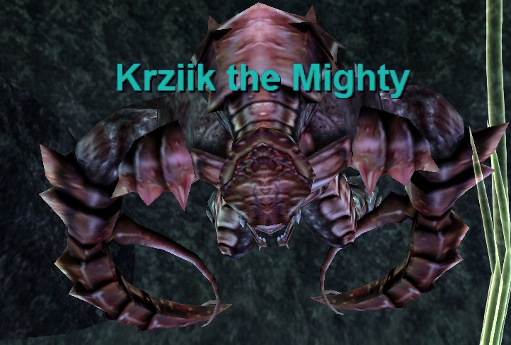
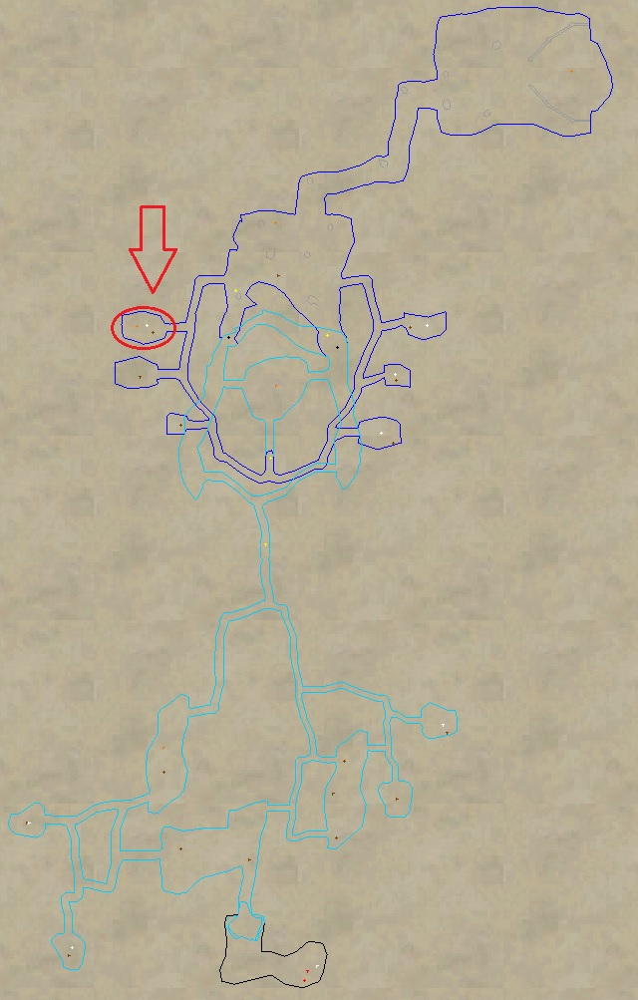
Fight Info
- 900,000 HP (PQDI; eqprogression estimated ~1 Million)
- Hits 714–2166 (PQDI; eqprogression estimated 2,200+)
- Rampages
- Unslowable (PQDI; eqprogression called him slowable)
- Casts Battle Cry of Regrua (Single Target, 3000 DD + Increases his movement speed 20%, 60 sec recast, Unresistable)
| Level | 77 |
|---|---|
| HP | 900,000 |
| Hits | 714 - 2166 |
| Resistances | MR 115 / CR 1000 / FR 165 / DR 95 / PR 95 |
| Special Abilities | Summon, Enrage, Rampage, Dual Wield, Do Not Equip, Magical Attack, Unslowable, Unmezzable, Uncharmable, Unstunable, Unfearable, Immune to fleeing, Immune to melee except magical, NO LOITERING |
| Can Cast | Battle Cry of Regrua |
Cross-referenced from pqdi.cc (Project Quarm Database Interface)
Ofossaa the Enlightened
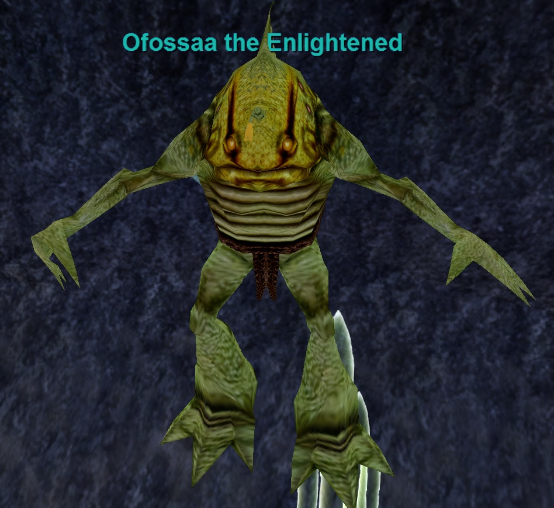
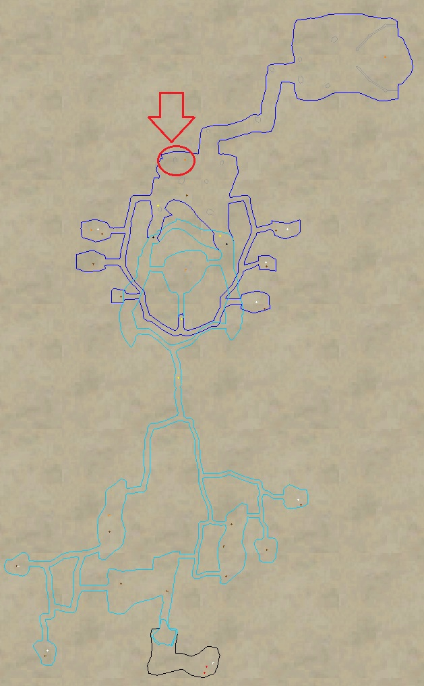
Fight Info
- 800,000 HP (PQDI; eqprogression estimated ~900K)
- Hits 548–1832 (PQDI; eqprogression estimated 2,100+)
- Flurries
- Slowable
- Casts Mists of Enlightenment (PBAE, -250 HP DoT/-100 Mana Drain DoT/-450AC/-20% Slow, -275 Cold Based, Curse Cure (18), 60 sec recast)
| Level | 78 |
|---|---|
| HP | 800,000 |
| Hits | 548 - 1832 |
| Resistances | MR 175 / CR 1000 / FR 115 / DR 95 / PR 95 |
| Special Abilities | Summon, Enrage, Flurry, Dual Wield, Do Not Equip, Magical Attack, Unmezzable, Uncharmable, Unstunable, Unfearable, Immune to fleeing, Immune to melee except magical, NO LOITERING |
| Can Cast | Mists of Enlightenment |
Cross-referenced from pqdi.cc (Project Quarm Database Interface)
Sources: eqprogression.com guide pages — Plane of Water Boss Guide and Coirnav the Avatar of Water Raid Guide; pqdi.cc for boss statistics (Grioihin the Wise, Hydrotha, Krziik the Mighty, Ofossaa the Enlightened, Coirnav the Avatar of Water); Quarm server Lua scripts (SecretsOTheP/quests, powater/) for event mechanics.